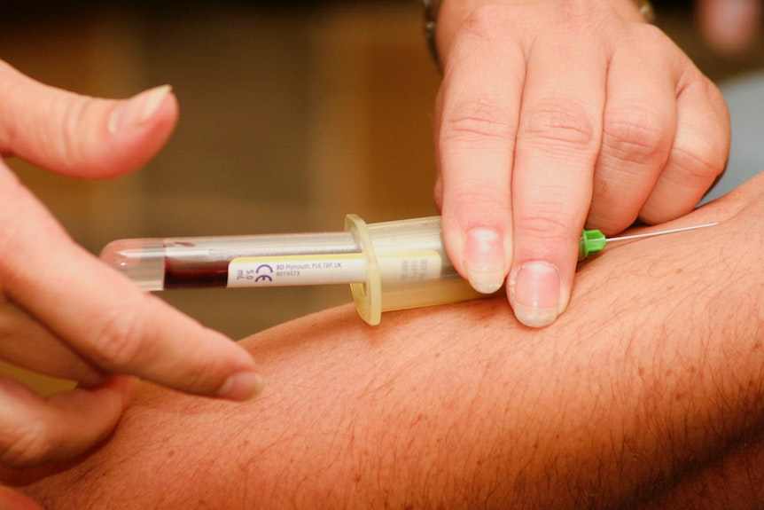
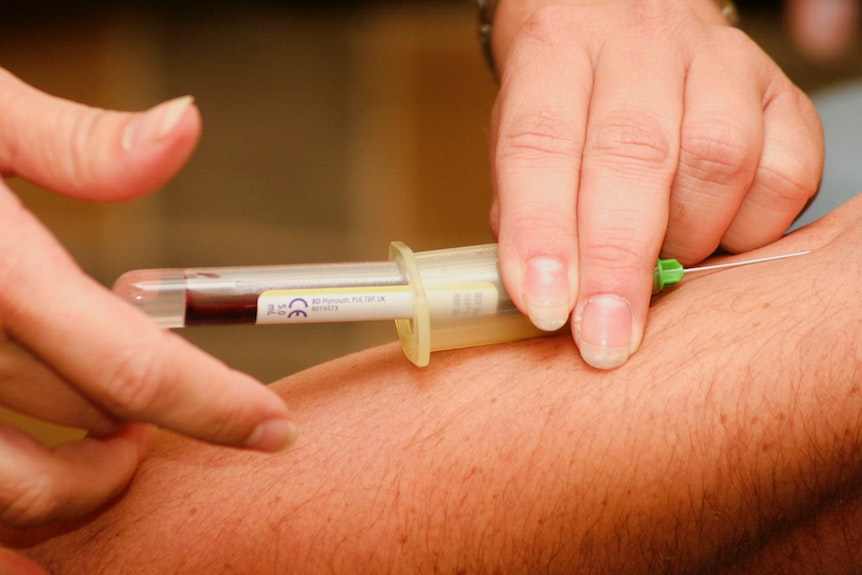

Leistung
Das oberste Gebot unseres medizinischen Handelns ist Empathie und Patientenzentrierung. Sie als Mensch mit Ihren Bedürfnissen, Erfahrungen und Wünschen stehen im Mittelpunkt. Wir bieten Ihnen stets das gesamte Spektrum schulmedizinsicher Diagnostik und Therapie an. Natürlich kommen wir im Bedarfsfall auch zu Ihnen nach Hause.
Ob in unseren Praxisräumlichkeiten oder bei Ihnen zu Hause: Als etablierte Praxis sind wir stolz auf unsere hervorragende Vernetzung mit Fachärzten und Kliniken vor Ort und können Sie im Bedarfsfall auch direkt an die geeigneten Stellen vermitteln.
Folgende Leistungen bieten wir im Rahmen der gesetzlichen Regelversorgung an:
Hausarztpraxis Farchant
Partnachstraße 2
82490 Farchant
Telefon:
+49 8821 6762
Telefax:
+49 8821 61768
Um Ihren Termin optimal vorzubereiten, bitten wir sie um eine vorhergehende Terminvereinbarung, entweder telefonisch oder online.
| Montag | 08.15 - 12.00 | | | 15.00 - 18.00 |
|---|---|---|---|
| Dienstag | 08.00 - 12.00 | | | 15.00 - 18.00 |
| Mittwoch | 08.00 - 12.30 | ||
| Donnerstag | 08.00 - 12.00 | | | 15.00 - 18.00 |
| Freitag | 08.00 - 12.30 |
| Montag | 08.15 - 12.00 | | | 15.00 - 18.00 |
|---|---|---|---|
| Dienstag | 08.00 - 12.00 | | | 15.00 - 18.00 |
| Mittwoch | 08.00 - 12.30 | ||
| Donnerstag | 08.00 - 12.00 | | | 15.00 - 18.00 |
| Freitag | 08.00 - 12.30 |
Um Ihren Termin optimal vorzubereiten, bitten wir sie um eine vorhergehende Terminvereinbarung, entweder telefonisch oder online.
Hausarztpraxis Farchant
Partnachstraße 2
82490 Farchant
Telefon:
+49 8821 6762
Telefax:
+49 8821 61768
 
